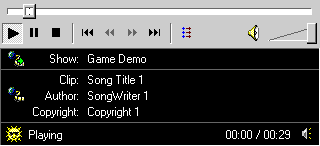

|
| ||
|
| ||
Nadja Vol Ochs
Microsoft Corporation
November 23, 1998
The following article was originally published in the Site Builder Network Magazine "Site Lights" column.
Five years ago, I worked with a team producing QuickTime and AVI movies for cross-platform CD-ROM titles. Getting the movies from video to CD-ROM required arduous hours of crunching through video. The final files were integrated into the CD-ROM content as small boxes in the surrounding screen.
Three years ago, I worked on designing an Interactive Television interface in which MPEG video with overlaid graphics played full screen. Using the outer portions of the screen for most of the navigation system, maximizing type legibility on a TV, and designing custom opaque overlays with menus to pop up over the MPEG stream were critical.
Two and a half years, ago I worked on a Web site that used video to illustrate Internet Explorer extensions to the HTML <IMG> tag. HTML source code referencing a small .avi file looked something like this:
<IMG DYNsrc="movie.avi" src="movie.gif" LOOP=INFINITE START=MOUSEOVER CONTROLS>
For audio, it looked like this:
<BGSOUND src="sound.wav" LOOP=3>
Using these media types on the site was cumbersome because the browser had to load the entire sound or video file in order to display it. Using video on Web sites was controversial and most chose not to use it because of the demand it had on download time.
Now I reflect on these projects and marvel at how media design integration has changed. I can visit any of the top Web sites and access nearly instantaneous or daily video and audio content. I can catch news clips, listen to a new song, laugh at animations, or view product demonstrations. For many companies, streaming media is also providing viable online business solutions.
The possible ways to integrate audio and video into a site's client-side design have evolved in the direction of media players. We are no longer limited to a single tag embedded in a Web page, a long download, and heavy file formats. The media is streamed within an embedded or stand-alone player.
New technology partnerships and innovations show that we are on the cusp of Web media integration possibilities. For example, in a demo shown recently during Bill Gates' Comdex keynote, a Silicon Graphics machine running Windows NT® displayed two QuickTime movies, high resolution images, and a live video feed -- all mapped onto the sides of a real-time rotating 3-D cube. The media combinations and continuity of the media in the interface itself is evolving due to more powerful machines. In addition, the interfaces on which these media types play increase in complexity.
Although the interface possibilities and technologies are evolving, we don't see many projects in which the content is visually integrated into the surrounding environment. Why? Is it because it is difficult for most Web sites of mass-produced content to spend the resources on designs that escape the box? Is there a high enough value placed on well-designed templates and quality conversion and production systems that focus on cranking out the content, then making it quickly accessible for all viewers?
Embedded or stand-alone media players of today, like the Windows Media Player, provide the interface functionality that is in demand at the time. A media player provides the much-needed consistent user interface, focus and visibility for the content, a watermark for branding, and a banner bar for advertisement and information enhancement. The media is most commonly viewed in a separate environment. From a Web page another window opens to reveal yet another box. Does this box provide an important design and aesthetic role for Web content delivery of the future? Can we let the world of boxes drive how we display content? I believe we must take media out of the box on work towards a seamless media integration.
If you want to provide a unique media experience on your site, try embedding the player, which is possible with little overhead in your designs. The Windows Media Player provides a flexible, customizable UI that does allow the content to integrate into the Web page and other Web elements on the page. Embedding the player works well for special features or for a smaller, more intimate collection of content.
The Windows Media Technology Showcase  has a couple examples that highlight successful integration into the page.
has a couple examples that highlight successful integration into the page.
Also here some live sites that use the embedded Windows Media Player in different manners:
Lions Gate Films 
In a dark room high above some midnight city, you select your viewing pleasure and watch select Lions Gate Films previews. A good example of integrating the player with customized buttons into a scene.
Universal Studios' Media Showcase 
Surrounding the video with a simple purple frame visually blends the video element into the page. The user has three viewing choices readily available. (The frame does not provide any visual buttons to control or navigate video, so you have to use right mouse to pause, stop, etc.)
CBS 
For major news stories with video attachments, CBS uses the embedded player inside a pop-up Web page that provides a choice of players and a connection speed. It is important to provide the user two to three choices of connection speeds ranging from 28.8 to ISDN.
There are many ways you can customize the way the ASF content plays when embedded using the <OBJECT> tag. For example, you can make various parts of the player visible or not, or to auto start the file or not.
<OBJECT ID="GameShow" CLASSID="CLSID:22d6f312-b0f6-11d0-94ab-0080c74c7e95" 22d6f312-b0f6-11d0-94ab-0080c74c7e95 WIDTH=320 HEIGHT=240> <PARAM NAME="FILENAME" VALUE="mymovie.asx"> <PARAM NAME="AutoStart" VALUE="True"> <PARAM NAME="TransparentAtStart" VALUE="True"> <PARAM NAME="ControlType" VALUE="2"> <PARAM NAME="ShowControls" VALUE="1"> <PARAM NAME="ShowDisplay" VALUE="1"> <PARAM NAME="ShowStatusBar" VALUE="1"> <PARAM NAME="AutoSize" VALUE="1"> </OBJECT>
The customization for the player above looks like this on the HTML page:

This file represented above is an audio file that was originally a .wav file. The .wav file was converted to a 28.8, Voxware MetaSound Codec, audio asf file format using the Windows Media On-Demand Producer  .
.
I noticed when this ASF file started in the player that there was a small animation playing at the beginning of the ASF file while it was buffering. When the animation completed the player would re-position and start the song. In order to hide the animation, I had to add the following parameter to the Windows Media Player <OBJECT> tag when embedding the player:
<PARAM NAME="AnimationAtStart" VALUE="False">
I will cover more on the Windows Media Player in future articles, as I have recently started to work in this area. In the meantime, I challenge you, as I will be challenging myself, to think about ways to "escape the box" and integrate the Windows Media control video into the scene or background seamlessly with custom navigation buttons. Let's see what we can come up with!
If you are using the Windows Media Player in interesting ways, I'd like to know. Please send me URLs and info.
Nadja Vol Ochs is the design consultant in Microsoft's Developer Relations Group.
Did you find this material useful? Gripes? Compliments? Suggestions for other articles? Write us!
© 1999 Microsoft Corporation. All rights reserved. Terms of use.